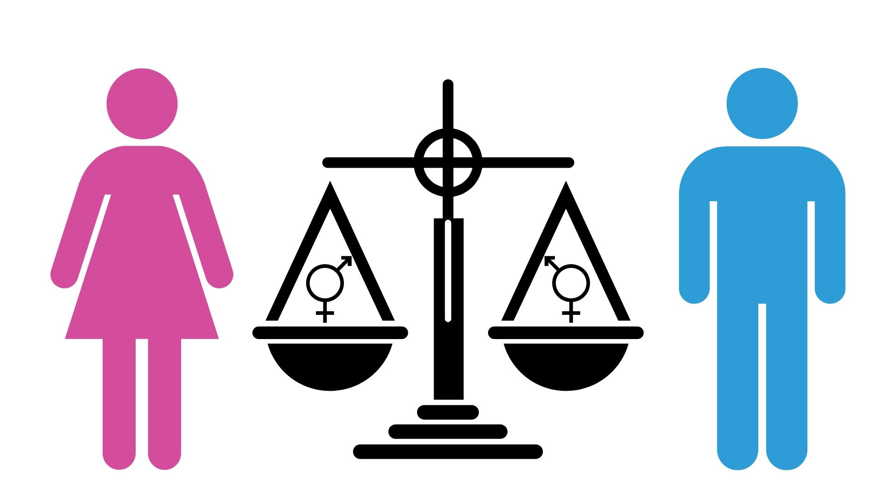

"
"
El trabajo de cuidados no remunerado incluye tareas domésticas como cocinar, limpiar, acarrear agua y combustible, cuidar a los niños o a los ancianos. Estas tareas domésticas son esenciales para el buen funcionamiento de la sociedad y la economía, y a menudo se pasan por alto. Las mujeres y las niñas soportan más la carga de estas tareas que los hombres y los niños. Antes de la pandemia del COVID-19, las mujeres dedicaban tres veces más horas al trabajo doméstico y de cuidados no remunerado que los hombres. Durante la pandemia, el tiempo dedicado al trabajo de cuidados ha aumentado tanto para las mujeres como para los hombres, pero el aumento de este trabajo ha sido mucho mayor para las mujeres. El progreso hacia la igualdad de género podría invertirse como resultado de este aumento de las responsabilidades domésticas de las mujeres. Las mujeres y las niñas, que son las principales cuidadoras en casa, tienen menos tiempo para asistir a la escuela o conseguir un trabajo.
"
Las normas y estereotipos de género omnipresentes refuerzan la creencia de que las funciones de las mujeres y las niñas se limitan al hogar. Debido al cierre de las escuelas y al aumento del trabajo desde casa durante la pandemia, las tareas domésticas se han vuelto más difíciles. Las niñas y las mujeres se han visto obligadas a asumir la responsabilidad de cuidar a los miembros de la familia y a los niños enfermos. El trabajo de cuidados domésticos no remunerado es menor en las regiones desarrolladas donde las mujeres dedican el doble de tiempo a estas tareas que los hombres. Es mayor en el norte de África y Asia occidental, donde las mujeres dedican siete veces más tiempo al trabajo no remunerado. En todo el mundo, las mujeres dedican de media unos 38 minutos más al día al trabajo remunerado y no remunerado que los hombres. Y realizan la mayoría de las tareas domésticas en el 89% de los hogares.Tanto los hombres como las mujeres dedicaron el doble de tiempo al trabajo doméstico no remunerado y al trabajo de cuidados durante la pandemia. Pero las mujeres seguían dedicando unas dos horas más al día que los hombres a estas actividades

Los cuidados no remunerados son un obstáculo para que las mujeres tengan pleno acceso a sus derechos humanos, especialmente para las mujeres que viven en la pobreza. Cuando las niñas y las mujeres dedican más tiempo al trabajo de cuidados no remunerado que los hombres, tienen menos oportunidades de recibir una educación o conseguir un trabajo remunerado.Un estudio descubrió que las tasas de pobreza por sexo y género son más amplias entre las mujeres de 25 a 34 años. Es entonces cuando los hogares suelen enfrentarse a mayores gastos de cuidado de los hijos y las mujeres tienen menos tiempo para el trabajo remunerado. Incluso antes de la pandemia del COVID-19, las mujeres tenían menos probabilidades de formar parte de la población económicamente activa. Y la pandemia del COVID-19 ha orillado a unas 28 millones de mujeres mayores de 25 años a abandonar el mercado laboral. Esto las pone en mayor riesgo de dependencia económica y de vivir en la pobreza. Según el Foro Económico Mundial 47 millones de mujeres podrían verse sumidas en la pobreza extrema en 2021, y se prevé que las diferencias salariales entre hombres y mujeres no hagan más que aumentar

incluyeron el trabajo de cuidados no remunerado como una de las principales barreras para la igualdad de género en 1995, y sigue siendo un gran obstáculo en la actualidad. Organizaciones de todo el mundo siguen luchando por el empoderamiento económico de las mujeres para elevar las comunidades. La Fundación Bill y Melinda Gates está trabajando para entender mejor el trabajo de cuidados no remunerado y apoyar estrategias probadas para derribar las barreras a las que se enfrentan las mujeres y las niñas La fundación se ha asociado con socios para recoger y analizar datos, crear y probar políticas, y apoyar a los gobiernos en la aplicación de cambios para promover la igualdad de género La Fundación Gates ha comprobado que las políticas que permiten una mayor flexibilidad laboral (como el trabajo desde casa o las opciones de horarios no tradicionales) permiten a las mujeres participar en la fuerza de trabajo y ganar un salario digno. La fundación también aboga por que los planes de recuperación de COVID-19 aborden el cuidado de los niños para avanzar en la igualdad de género.
Los defensores de los derechos de las mujeres de todo el mundo están presionando para que se reconozca el trabajo doméstico y de cuidados no remunerado. Quieren aumentar la visibilidad del tema y proporcionar el tiempo y los recursos necesarios para que hombres y mujeres compartan las tareas domésticas. Hay muchas formas de ayudar a marcar la diferencia: contabilizar el trabajo de cuidados no remunerado en las estadísticas, reconocer su lugar en la economía, compensar a las mujeres por sus contribuciones y tener en cuenta el trabajo de cuidados no remunerado al tomar decisiones políticas.